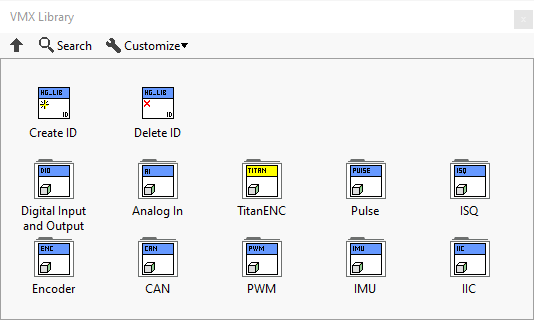

VMX Library
Hint
All example images can be dragged and dropped into LabVIEW.
The VMX Library holds all the classes and underlying functions in the toolkit.
The Library has two simple functions and ten seperate sections contating specifc code for those functions.
vi |
attributes |
|---|---|
Create ID |
Creates a port |
Delete ID |
Deletes a port |
Note
Example use of the Create ID and Delete ID will be shown in the sections below.
The ten seperate specifc sections are

LabVIEW VMX-Library Available Pins
Function |
LabVIEW Interface |
VMX Interface |
|---|---|---|
ENC |
0 |
FlexDIO 0,1 |
ENC |
1 |
FlexDIO 2,3 |
ENC |
2 |
FlexDIO 4,5 |
ENC |
3 |
FlexDIO 6,7 |
IMU |
0 |
|
AI |
22 |
22 |
AI |
23 |
23 |
AI |
24 |
24 |
AI |
25 |
25 |
CAN |
2 |
CAN |
PWM |
14 |
14 |
PWM |
15 |
15 |
PWM |
16 |
16 |
Pulse |
12 |
12 |
Pulse |
13 |
13 |
ISQ |
8 |
8 |
ISQ |
10 |
10 |
IIC |
0 |
IIC |
DO |
17 |
17 |
DO |
18 |
18 |
DO |
19 |
19 |
DO |
20 |
20 |
DO |
21 |
21 |
DI |
9 |
9 |
DI |
11 |
11 |